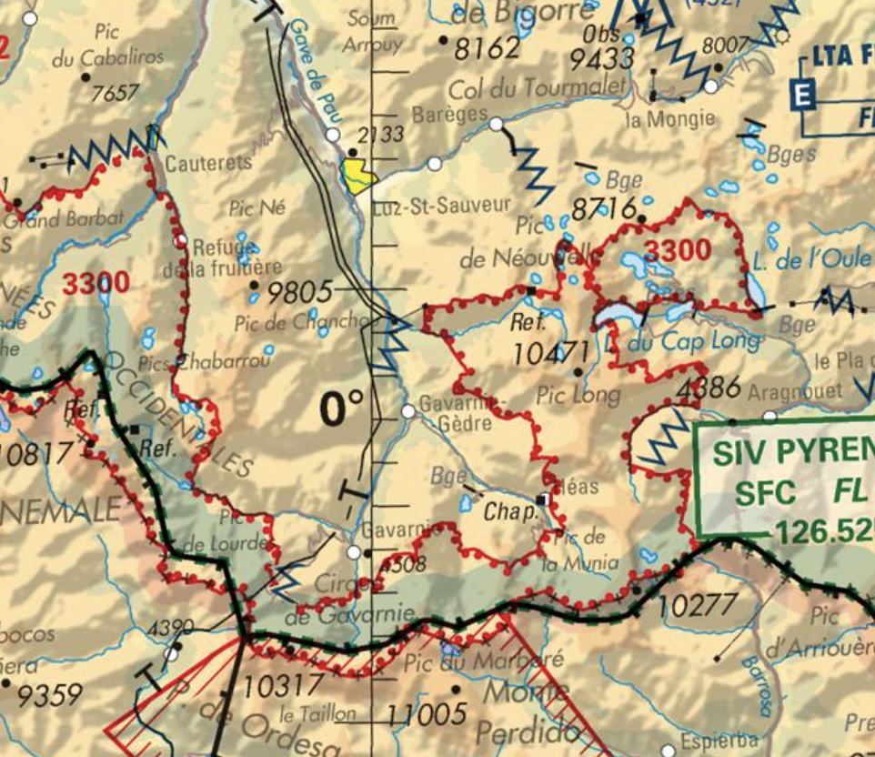
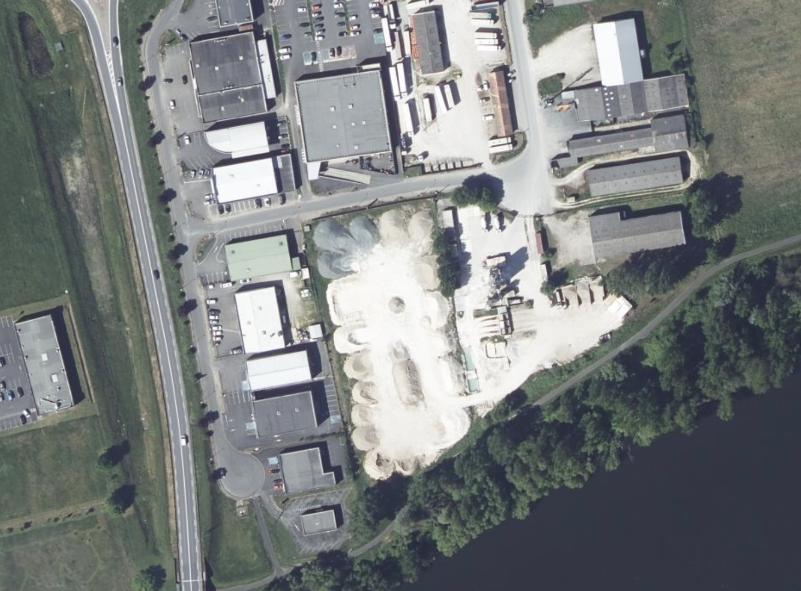
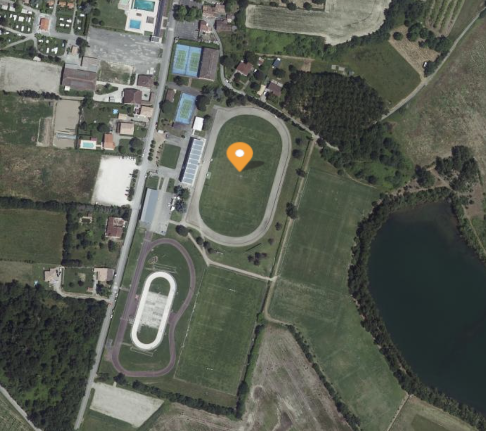

VOLTAC — Vols tactiques hélicoptères
Zones dédiées aux hélicoptères militaires en transport tactique à très basse altitude. Trajectoires libres dans le secteur.
Jour 2 Matin — Cartographie & Outils
Référentiel RS6982 — 3 jours / 24hMaîtriser la lecture des cartes aéronautiques et comprendre l'organisation de l'espace aérien français pour préparer vos missions drone en toute sécurité.
Principe : vérifier TOUS les espaces aériens avant chaque vol via la carte OACI + NOTAM + Cartes.gouv.fr

.png)


Zones dédiées aux hélicoptères militaires en transport tactique à très basse altitude. Trajectoires libres dans le secteur.
Entraînement chasse à très basse altitude. Vitesse élevée (jusqu'à 900 km/h), danger extrême pour les drones.
Réseau de routes aériennes militaires permanentes. Interdit si actif. Couloirs étroits empruntés par la chasse à très basse altitude.
Carte publiée quotidiennement par le SIA indiquant l'activation des RTBA pour la journée. Consulter obligatoirement avant chaque vol.
🌐 sia.aviation-civile.gouv.fr — rubrique AZBA

Carte AZBA — exemple d'activation quotidienne

Les plateformes et ressources indispensables pour préparer chaque vol dans le respect de la réglementation.
✅ En catégorie Ouverte, l'autorisation préalable est obligatoire uniquement dans deux cas :
Toute mission au-dessus de 50 m AGL (mesurée par rapport à la surface) nécessite une autorisation préalable du gestionnaire d'espace concerné.
Tout vol où le télépilote n'a plus le contact visuel direct avec le drone (sans observateur en relais) nécessite une autorisation et bascule en catégorie Spécifique.
Vol VLOS < 50 m, hors zones réglementées, hors aérodrome : aucune autorisation préalable requise (sous réserve du respect des règles cat. Ouverte).


* Sauf conditions particulières publiées à l'arrêté « espaces » du 3 décembre 2020.


Mettre en pratique les connaissances acquises sur les espaces aériens et les outils de préparation de vol.
📍 Lieu : 15 rue Porte de la Dordogne, 24100 Creysse
📐 Coordonnées : 44.847684, 0.536311
🎯 Mission : Réaliser une orthophoto pour calculer une cubature

44.8477°N, 0.5363°E — Creysse (24)
1. Scénario retenu
A3 (zone non peuplée, carrière) ou STS-01 si proximité d'habitations. Carrière de Creysse = zone industrielle isolée → A3 suffit.
2. Matériel
Drone classe C2 avec capteur RGB 20 Mpx (ex: Mavic 3 Enterprise, Phantom 4 RTK). Recouvrement 80% frontal / 70% latéral.
3. Analyse zone
Vérifier CTR Bergerac (proximité), code couleur cartes.gouv.fr, NOTAM du jour. Hauteur autorisée probable : 60-100 m selon zone.
4. Plan de vol
Décollage en bordure carrière, grille en damier, altitude 50 m AGL, vitesse 5 m/s. Durée estimée : 2 batteries (35 min).
⚠️ Erreurs fréquentes
Oubli de la hauteur réelle (zone colorée), confusion AGL/AMSL, plan de vol non sauvegardé, batteries insuffisantes.
✅ Livrables
Orthophoto géoréférencée + MNS/MNT pour calcul cubature. Précision attendue : 5 cm/pixel au sol.
📍 Lieu : Stade Evelyne Jean Baylet, 82400 Valence d'Agen
📐 Coordonnées : 44.095376, 0.890803
🎯 Mission : Filmer un match de football sur le stade

44.0954°N, 0.8908°E — Valence d'Agen (82)
Chaque stagiaire présente son dossier de préparation de mission.
Oubli de NOTAM, mauvaise lecture de carte, confusion hauteur/altitude, zone non vérifiée.
Méthodologie rigoureuse, double vérification, documentation complète du vol.
Retour personnalisé et validation des compétences de préparation de mission.